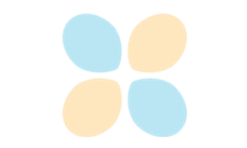

Tutorials
The following tutorials show the different features of the brainsprite python API, and how to embed brainsprite viewers inside html documents.

Anatomical scan viewer
Statistical map viewer
The following tutorials show the different features of the brainsprite python API, and how to embed brainsprite viewers inside html documents.